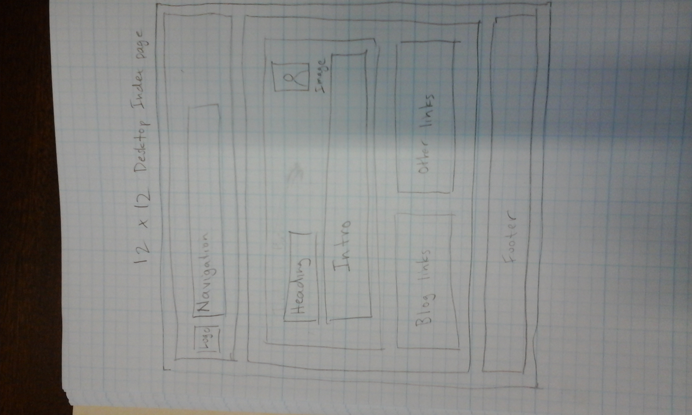
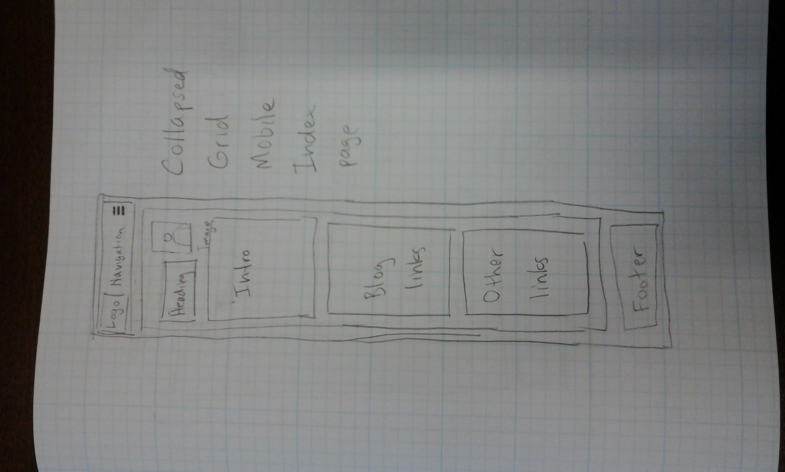
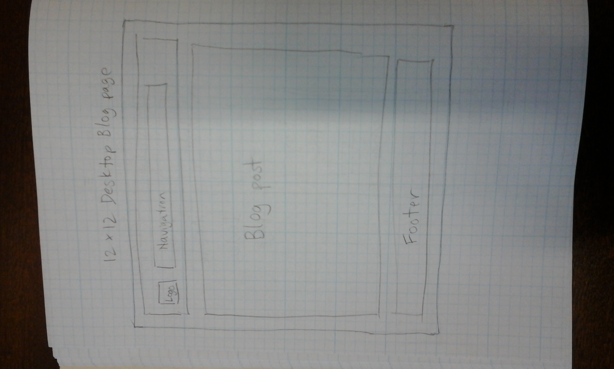
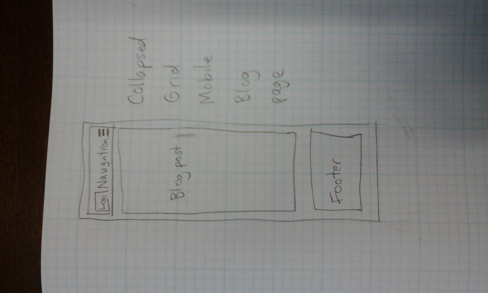

Technical Blog
What a responsive site is, and why responsiveness is important:
A responsive site is one that can respond to different viewport sizes by shifting it's elements in an elegant and predictable way. As a window is resized to become smaller, it may do this by at first decreasing column width and then later by stacking columns on top of one another. In this way a page will remain usable and well presented on o variety of devices.
What mobile first design is, and why it's important:
This is the approach of first designing a website to look good and work well on smaller mobile devices, and then adding various features (using HTML, CSS, and JavaScript) to enhance the website for larger viewport sizes. It's important because these days mobile devices are becoming a dominant platform. Their low cost and small size allows many more people to connect to the internet. However mobile devices often have less processing power than a desktop PC, so mobile-first design should take this into account.
What frameworks are, and their pros and cons:
Common problems have common solutions. Frameworks are essentially pre-packaged solutions to these common problems. The two main categories are front-end frameworks and back-end frameworks. Front-end frameworks provide HTML and CSS code that specify common elements or design themes (such as navbars or buttons). Bootstrap and Skeleton are popular examples of these. Back-end frameworks provide common solutions for business logic and other frequently required features. (For example, user authentication systems). Ruby on Rails and Django are examples of back-end frameworks. The disadvantage of frameworks is that they may have only limited customizability and may therefore force the developer into solutions which are not optimal.
What a wireframe is and why we use it:
A wireframe is a process of taking a website design (which may have been provided as a PDF by a designer) and subdividing it into a number of boxes. These boxes may contain further boxes. The boxes usually represent some element of page design. They are then put into HTML code by using tags such as div, article, nav, and section.
The aspects of my wireframes I found difficult to implement, and why:
I found it difficult to know how many boxes to subdivide my design into. Often a design feature could be represented in more than one way.
Here are my wireframes:
- 
- 
- 
- 
The accessibility features I included in my site:
All images have alt text to give information to text readers. Colours are chosen to be high-contrast.
The usability features I included in my site:
A nice big navbar (which is still a work in progress).